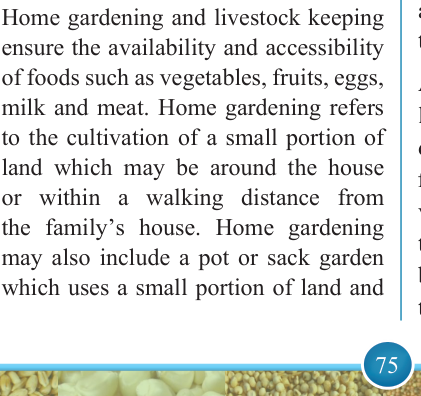
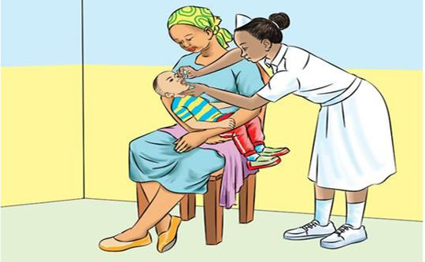

75


Food and Human Nutrition

Form Two
Supplementation
programmes
are
usually targeted to groups of people with special needs such as infants, school
children,
pregnant
women
and lactating mothers to prevent micronutrient deficiencies. This is
because people in these groups have increased micronutrient needs, but they may not meet them through diet. Figure
3.11 shows a child being given Vitamin
A supplement.

Figure 3.11: A child being given Vitamin A supplement
(vi) Home gardening and livestock keeping
Home gardening and livestock keeping ensure the availability and accessibility of foods such as vegetables, fruits, eggs, milk and meat. Home gardening refers to the cultivation of a small portion of land which may be around the house or within a walking distance from the familyʼs house. Home gardening may also include a pot or sack garden which uses a small portion of land and
it requires less water. This strategy enhances household food availability and it alleviates malnutrition where there is a food crisis.
Animal Source Foods (ASF) from livestock keeping are the richest dietary sources of protein (known as first class protein or complete protein), vitamins, minerals and essential fats that cannot be synthesized by the body. Thus, they should be supplied through diet. It is important to keep
17/09/2025 16:30